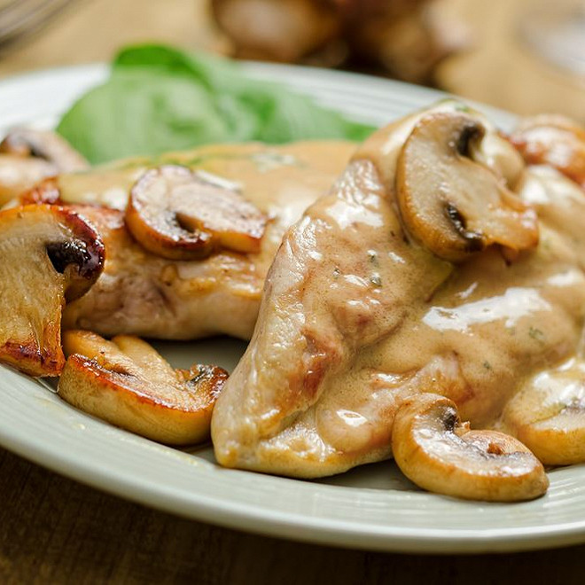

Escalope Normande

Well, I want to start this recipe with a litlle bit of background; the escalope normande is a typical french dish that comes from Normandie, a region of france. It's more usually made with chicken and it uses local ingredients such as calvados, crême fraiche from Normandie and even some apple sometimes. It is often made with mushroom from Paris and can be served with a variety of different things.
Enjoy !
Ingredients :
- Butter
- Mustard
- Salt and pepper
- Chicken
- White wine
- Mushroom
- crême fraiche
- Egg
Steps :
- Melt the butter and as soon as it foams, sear the escalopes on both sides without letting them brown.
- Remove them from the pan and keep them warm.
- Pour the white wine into the pan, bring to the boil, add the mustard. As soon as it is diluted, put the cutlets back into this preparation over low heat.
- Salt, pepper.
- Add the mushrooms and crème fraîche.
- Then let cook for 10 to 15 minutes watch carefully... there is nothing better!
- When ready to serve, place the escalopes on a serving dish then, dilute the egg yolks with a few spoonfuls of sauce and remove from the heat, add this preparation to the sauce.
- Stir and if necessary reheat without letting it boil.
- Coat the escalopes with this sauce.
Useful link :
Main menue
Cauliflower cheese
Lasagna